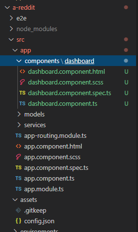
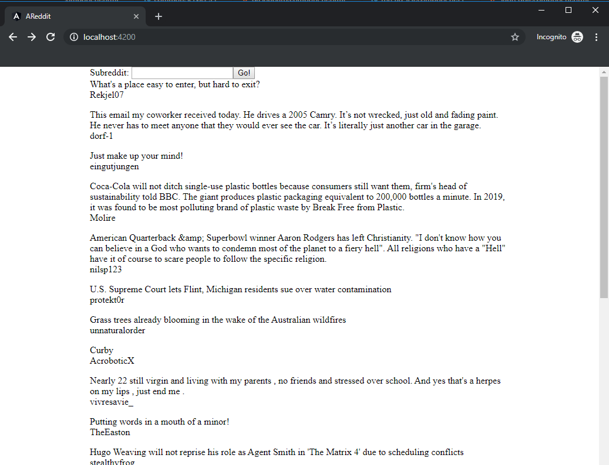
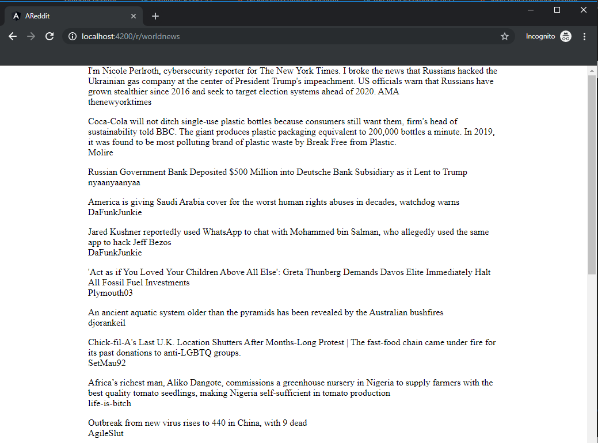

Simple Reddit client using Angular (2)
In the last post, I created a simple web app that can fetch and show data from Reddit, but it doesn’t have many features, only able to view threads from /r/worldnews. In this post I’m going to restructure the app a bit and add subreddit browsing feature.
Application structure
Right now my app has only one component - dashboard - in the app folder, which is difficult to scale if my app grows. So I’m going to create a components folder inside app, then move all created component in there.

After moving the component, I need to fix the import.
src/app/app.module.ts
import { DashboardComponent } from './components/dashboard/dashboard.component';
src/app/components/dashboard/dashboard.component.ts
import { Thread } from '../../models/thread'
import { DashboardService } from '../../services/dashboard.service'
src/app/app-routing.module.ts
import { DashboardComponent } from './components/dashboard/dashboard.component'
Next step, I will create a component for displaying subreddit, the command is similar to dashboard creation, but I need to prepend the folder name
ng generate component components/subreddit
Subreddit component has been generated in src/app/components/subreddit.
Services
So now we have dashboard for reddit front page, and subreddit for each subreddit page. Since the data fetching logic is the same (making a request, subscribe the thread list to response data etc), so only one service is needed.
I will rename dashboard service…
dashboard.service.spec.ts
dashboard.service.ts
…to common service (feel free to pick any name you like, just remember to update the source code with the correct name).
common.service.spec.ts
common.service.ts
If you are using Visual Code to rename, a pop up message will appear asking if you want VS Code to fix the import. In this post I’m going to do it manually.
common.service.ts
export class CommonService
common.service.spec.ts
import { CommonService } from './common.service';
describe('CommonService', () => {
beforeEach(() => TestBed.configureTestingModule({}));
it('should be created', () => {
const service: CommonService = TestBed.get(CommonService);
expect(service).toBeTruthy();
});
});
Currently in common service, there is only one function getThreads. The only difference between front page and subreddit is the URL. So I will make 2 more functions and call to getThreads.
src/app/services/common.service.ts
export class CommonService {
constructor(private httpClient: HttpClient, private appConfigService: AppConfigService) { }
getFrontPage() {
return this.getThreads('/');
}
getSubreddit(subreddit: String) {
return this.getThreads('/r/' + subreddit);
}
getThreads(path: String): Observable<any> {
return this.httpClient.get(this.appConfigService.baseUrl + path + '.json').pipe(
map(res => {
return res['data']['children'].map(thread => {
let t = thread['data'];
return new Thread(t['title'], t['author'], t['permalink'], t['url']);
});
}
)
);
}
}
Child component
Now we have dashboard component and subreddit component. The 2 components have almost the same logic: call to common service to fetch data from Reddit, then map data to list threads in view. We will create a child component called thread-list and use it in both dashboard and subreddit.
ng generate component components/thread-list
The HTML is the same as dashboard view.
src/app/components/thread-list/thread-list.component.html
<div class="list-thread">
<div class="thread" *ngFor="let thread of threads">
<div class="title">{{ thread.title }}</div>
<div class="info">{{ thread.author }}</div>
</div>
</div>
Add some CSS for styling. src/app/components/thread-list/thread-list.component.scss
.list-thread {
display: flex;
flex-direction: column;
}
.thread {
margin-bottom: 1rem;
}
Now we need to call Common service from dashboard/subreddit, then pass the data into thread-list component. There are many ways to achieve this, I will use input binding since it’s pretty simple.
src/app/components/thread-list/thread-list.component.ts
import { Component, OnInit, Input, OnChanges } from '@angular/core';
import { Thread } from '../../models/thread';
...
export class ThreadListComponent implements OnInit, OnChanges {
@Input()
threads: Thread[];
constructor() {
}
ngOnInit() {
}
ngOnChanges(changes: any) {
if (changes['threads']) {
this.threads = changes['threads'].currentValue;
}
}
}
threads property is adorned with Input decoration. ngOnChanges runs whenever the app detects changes to input properties.
thread-list component is finished, we will implement logic handling in dashboard and subreddit.
Dashboard
On top of dashboard, for subreddit navigation, I will add a textbox and a button. The logic is simple:
- By default the app will load all threads from Reddit front page.
- If user enters subreddit’s name in textbox and presses the button, the app will redirect to subreddit component.
To achieve, I will use Angular’s Reactive Forms for data binding…
src/app/app.module.ts
import { ReactiveFormsModule } from '@angular/forms';
...
imports: [
...
ReactiveFormsModule
],
… and update route file.
src/app/app-routing.module.ts
import { SubredditComponent } from './components/subreddit/subreddit.component'
const routes: Routes = [
{
path: '', component: DashboardComponent
},
{
path: 'r/:subreddit', component: SubredditComponent
}
];
Update dashboard view.
src/app/components/dashboard/dashboard.component.html
<label>
Subreddit:
<input type="text" [formControl]="subredditInput">
</label>
<button (click)="toSubreddit()">Go!</button>
<app-thread-list [threads]="threads"></app-thread-list>
Here we bind “Go!” button’s click event to function toSubreddit. We also insert thread-list component into dashboard as a child component, bind threads property to thread-list’s threads property we created above.
src/app/components/dashboard/dashboard.component.ts
import { FormControl } from '@angular/forms';
import { CommonService } from '../../services/common.service'
import { Router } from '@angular/router';
...
export class DashboardComponent implements OnInit {
subredditInput = new FormControl('');
threads: Thread[];
constructor(private commonService: CommonService, private router: Router) {
this.threads = [];
}
ngOnInit() {
this.loadFrontpage();
}
loadFrontpage(): void {
this.commonService.getFrontPage().subscribe(res => { this.threads = res });
}
toSubreddit(): void {
this.router.navigate(['/r/' + this.subredditInput.value]);
}
}
Inside dashboard component logic, on init loadFrontpage will be called, if user clicks button, the app will call toSubreddit, then get value from textbox and redirect to subreddit component.
Subreddit
Update subreddit view.
src/app/components/subreddit/subreddit.component.html
<app-thread-list [threads]="threads"></app-thread-list>
subreddit logic.
src/app/components/subreddit/subreddit.component.ts
import { Thread } from '../../models/thread'
import { CommonService } from '../../services/common.service'
import { ActivatedRoute } from '@angular/router';
...
threads: Thread[];
subreddit: String;
constructor(private commonService: CommonService, private route: ActivatedRoute) {
this.threads = [];
this.subreddit = this.route.snapshot.paramMap.get('subreddit');
}
ngOnInit() {
this.loadSubreddit();
}
loadSubreddit(): void {
this.commonService.getSubreddit(this.subreddit).subscribe(res => {
this.threads = res;
})
}
Final step is updating the main app HTML and CSS. src/app/app.component.html
<div class="container">
<div class="left-column">
</div>
<div class="content">
<router-outlet></router-outlet>
</div>
</div>
src/style.scss
a {
text-decoration: none;
}
html,
body {
height: 100%;
width: 100%;
margin: 0;
padding: 0;
}
* {
margin: 0;
padding: 0;
}
*,
*:before,
*:after {
-webkit-box-sizing: border-box;
-moz-box-sizing: border-box;
box-sizing: border-box;
}
img {
max-width: 100%;
height: auto;
}
src/app/app.component.scss
.container {
width: 100%;
margin-left: auto;
margin-right: auto;
display: flex;
}
.content {
flex-basis: 70%;
}
.left-column {
flex-basis: 15%;
}
Enter the command below then go to the browser to see the result.
ng serve
 Type a subreddit name in the textbox then press the button.  Source code on github.